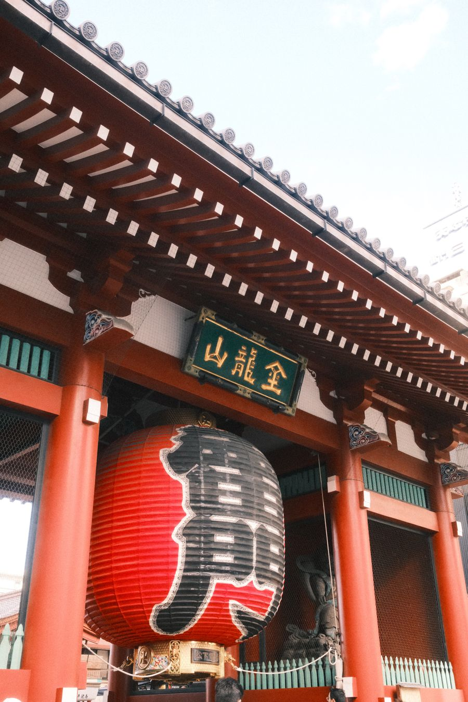
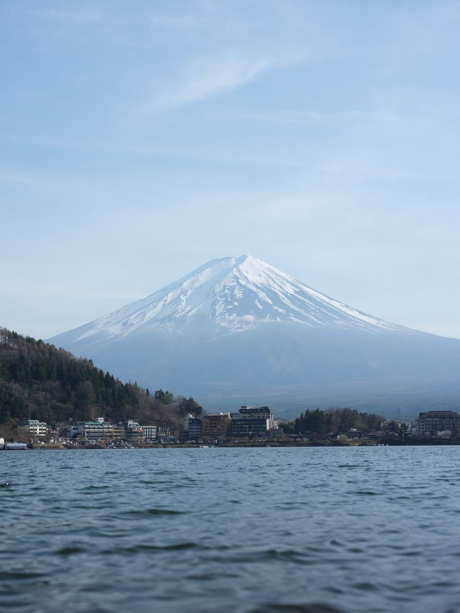
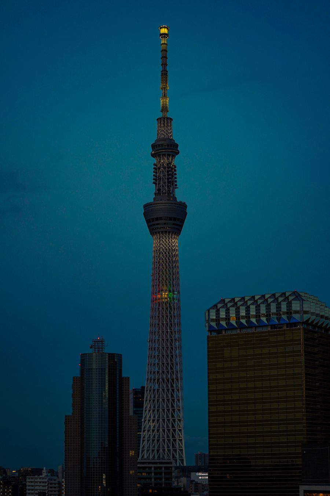
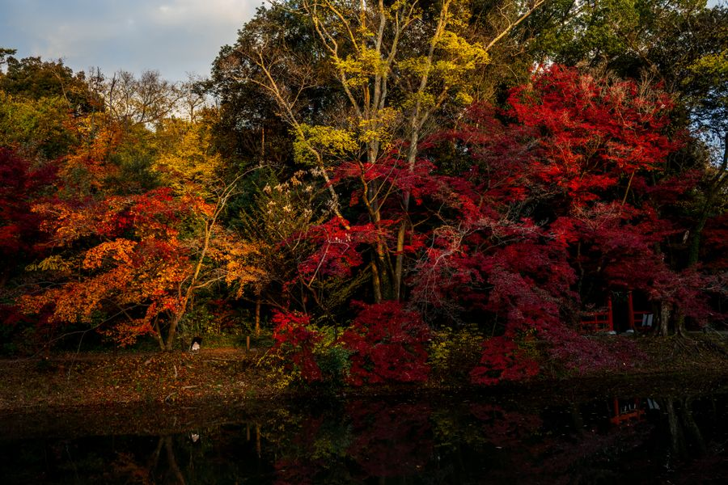
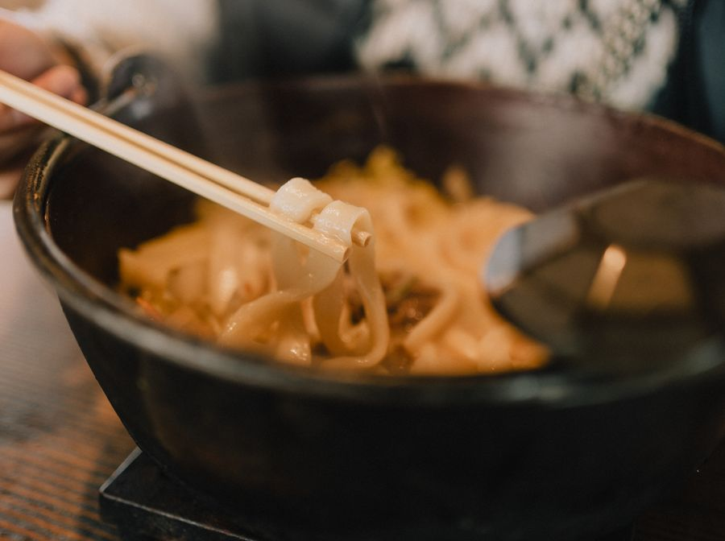
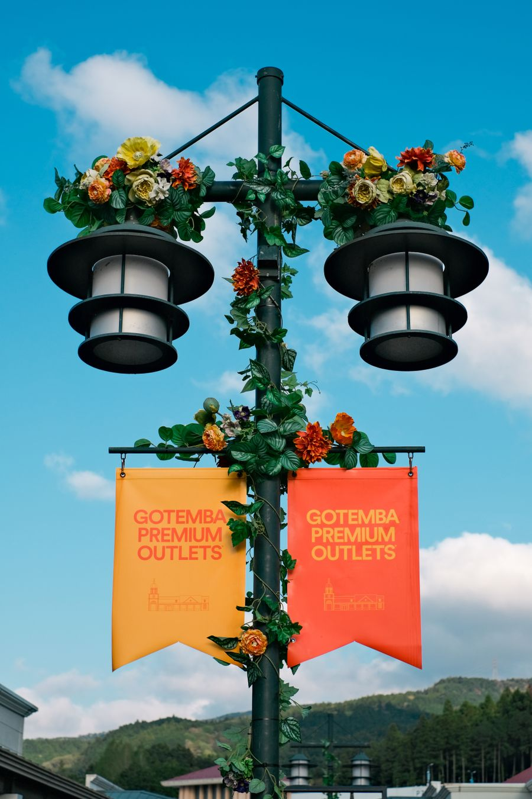
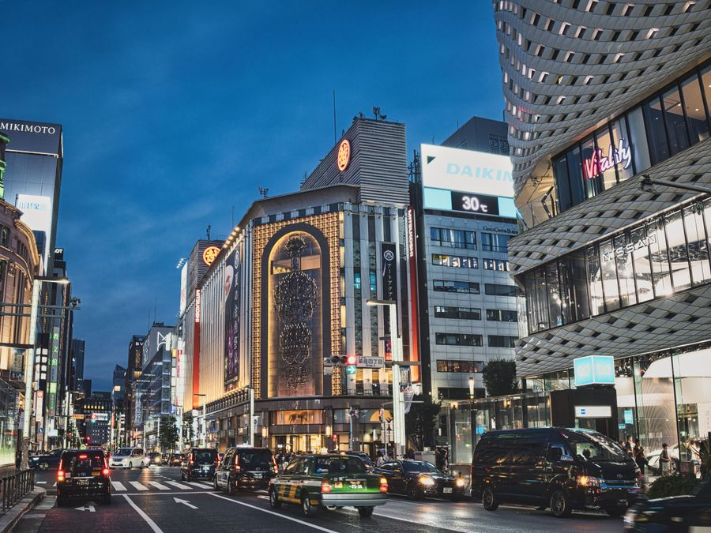
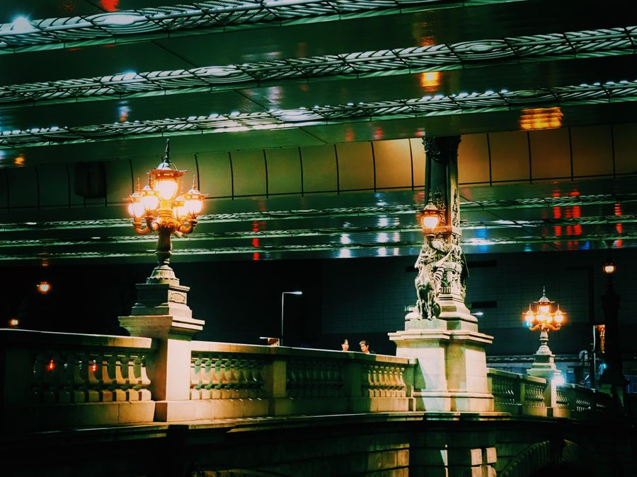

浅草寺
浅草寺 / Sensō-ji
东京最老的寺院，雷门那只大灯笼就是它。对长辈的意义不在信仰，在于这条路平、短、热闹，走两百米就能看完主要部分。

四晚拆成两段：东京住三晚、河口湖住一晚。这样富士山不用当天来回坐四小时车，长辈也不用连着换酒店。东京的基地放在东京站八重洲一侧——机场巴士、去河口湖的巴士都在同一片，银座步行可达。
1. 河口湖温泉一晚（11/13，红叶祭加周五，最先卖完）；2. 东京三晚（11–13 两晚 + 14 一晚，拆成两张订单）；3. 11/13 东京到河口湖的巴士；4. 11/14 河口湖到御殿场、御殿场回东京两段巴士。
四个点全部排进日程，判断标准不是名气，是「站得久不久、有没有地方坐、要不要爬」。几个名气更大但费腿的，放到了第 7 模块。

东京最老的寺院，雷门那只大灯笼就是它。对长辈的意义不在信仰，在于这条路平、短、热闹，走两百米就能看完主要部分。

全程电梯，室内观景，天气好时能看到富士山。对长辈来说这是「不费腿就能看到全景」的唯一选择。

150 米长的枫树隧道，尽头正对富士山。11 月中旬是全年最好的时候，这条步道平、短，走完不累。
看富士山不一定要上山。北岸隔着湖面看过去，是它最上镜的角度，也是唯一不用爬、不用排队的位置。
三件事，都不需要体力，但都需要提前安排。
住宿三家的取舍逻辑写在卡片里——东京两家二选一，河口湖一家必住。餐厅只列「不点会后悔」的，不铺清单。
东京站日本桥口直结，电梯上 27 楼就是大堂。带长辈这件事上，它的价值几乎全在「出站到进房不超过 5 分钟」。
如果这趟更偏购物，住这里比住东京站更舒服：过马路就是三越，买多了能拿回房间再出来。
湖边老牌温泉旅馆，房内吃会席、屋顶泡足汤、车站免费接送。带长辈住一晚温泉，是这趟行程里最不容易出错的一笔花费。
现烤的鸡蛋蛋糕，里头是红豆馅，手掌大小。浅草仲见世一条街有十几家，看哪家在排队就买哪家。

山梨的乡土面食，粗面条和南瓜、味噌一起煮成一锅，汤浓、面厚、冬天吃最合适。长辈通常很接受这个口味。
1874 年开到现在，日本红豆面包的起点。银座逛累了买一个，坐在店里配茶。
分三段：奥莱解决大件，银座解决百货与化妆品，日本桥解决伴手礼。退税都集中在最后一天上午办。

富士山脚下的奥莱，天气好时能一边逛一边看到山。运动户外和欧美服饰折扣最实在。

百货最密集的一片，也是路面最平的一片。三越、松屋、Ginza Six 三个商场足够逛两天。

比银座安静一半，三越本店就在这里。退税柜台排队比银座短，适合最后一天上午来收尾。
东京香蕉（Tokyo Banana）——车站和机场都有，保质期短，临走前买；文明堂蜂蜜蛋糕——日本桥老铺，保质期约两周，适合带回国；药妆——松本清、唐吉诃德，消耗品退税后封袋，离境前不能拆；刀具与厨房小物——日本桥木屋，可托运但必须放托运行李。
中国公民赴日没有免签，也没有落地签，旅游必须提前办签证。
单次旅游签可通过指定代办机构申请 JAPAN eVISA（停留 15 天或 30 天），出签约 5 个工作日，签证费单次约 715 元。个人不能直接向使领馆送签。
依据：日本驻华大使馆及各代办机构 2026 年 9 月公示。政策会调整，出行前再核一次。
日本 11 月有 11 月 3 日文化日、11 月 23 日勤劳感谢日，都不在本次行程日期内。
但 11 月中旬是红叶季高峰，河口湖周末（11/14–15）本地游客多，住宿和巴士要早订。
市内用 Suica / PASMO，手机可加，便利店也能刷。东京地铁换乘多，站内电梯要找「エレベーター」标识，别跟着人流走楼梯。
去河口湖：高速巴士约 2 小时 15 分、¥2,000 上下；直达特急约 1 小时 53 分、¥4,200，全车指定席。带长辈优先巴士，少一次换乘。
11 月东京日均 13℃、夜间 7℃；河口湖日均 7℃、夜间可到 1℃。湖边风大，体感更低。
给长辈备：抓绒或薄羽绒 + 防风外套、围巾、暖宝宝。室内暖气足，穿脱方便最重要。
大商场、连锁店、便利店都能刷卡和扫码，但老铺、小摊、部分神社只收现金。随身带 1–2 万日元零钞，别全靠手机。
报警 110，火警急救 119。日本医院就诊需先挂号，建议出发前买好含医疗的旅行险。
药妆店可买常用药，但处方药需翻译件。带上长辈的常备药原包装。
都是当天路线 30 公里内、值得去但没排进去的地方。勾选后点下面的按钮，会生成一段可以直接粘给 AI 的改行程请求。